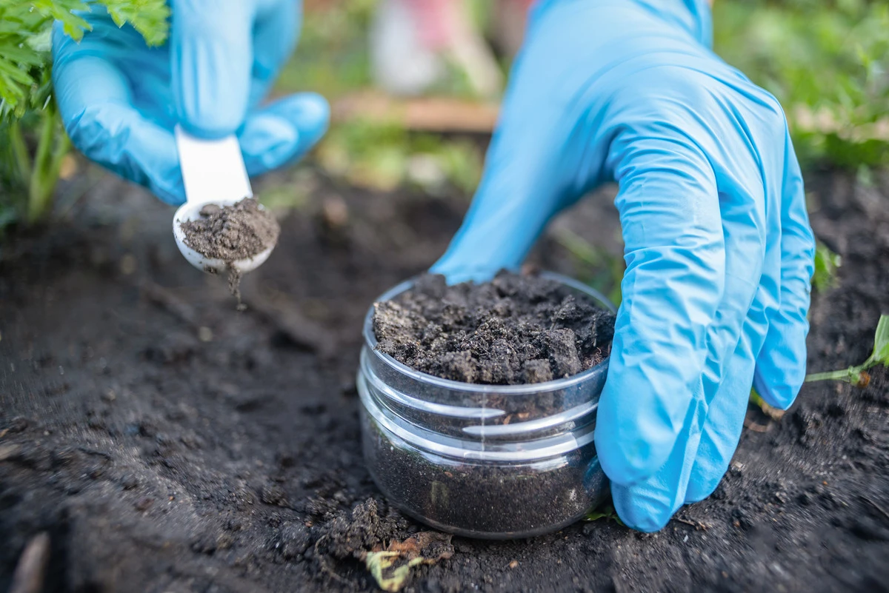
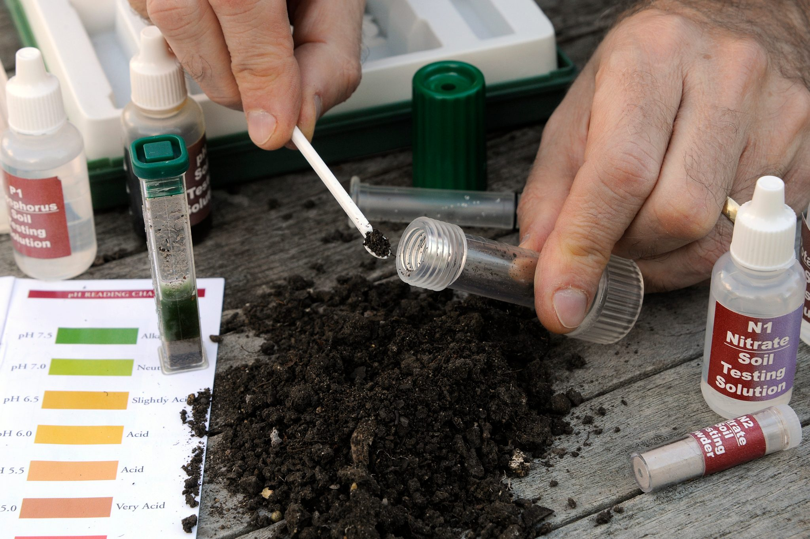
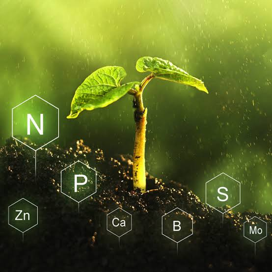
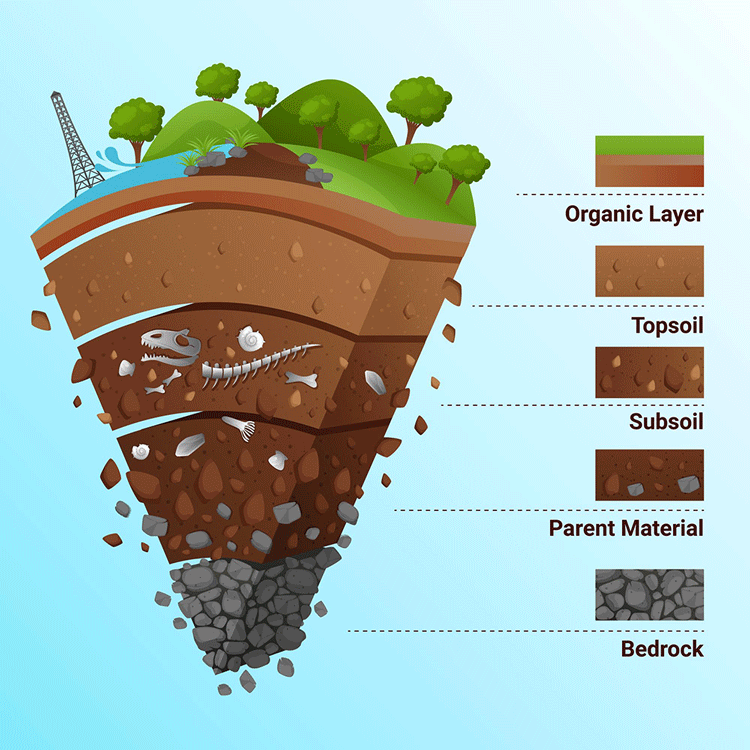

நாங்கள் மண்ணின் வளத்தை முழுமையாக ஆய்வு செய்து பயிருக்கு தேவையான ஊட்டச்சத்து நிலையை மதிப்பிடுகிறோம். மண்ணில் நைட்ரஜன், பாஸ்பரஸ், பொட்டாசியம் மற்றும் நுண்ணூட்டச்சத்துகள் போதுமான அளவில் உள்ளனவா என்பதை கண்டறிகிறோம். சத்து குறைபாடுகளை அடையாளம் கண்டு, அதற்கு ஏற்ற இயற்கை உரங்களை பரிந்துரைக்கிறோம். மண்ணின் உயிர்ச்சக்தி மற்றும் விளைச்சல் திறனை மேம்படுத்த தேவையான ஆலோசனைகளையும் வழங்குகிறோம். இதன் மூலம் பயிர்கள் ஆரோக்கியமாக வளரவும், அதிக மகசூல் பெறவும் வழிகாட்டுகிறோம்.

நாங்கள் மண்ணின் pH அளவை பரிசோதித்து அது அமிலத் தன்மையா, காரத் தன்மையா அல்லது சமநிலையிலா உள்ளது என்பதை கண்டறிகிறோம். pH அளவு பயிர்களின் சத்து உறிஞ்சும் திறனை நேரடியாக பாதிக்கும் என்பதால், அதற்கேற்ற தீர்வுகளை வழங்குகிறோம். pH சமநிலையை மேம்படுத்த இயற்கை முறைகளை பரிந்துரைக்கிறோம். மண்ணின் தரத்தை உயர்த்தும் உரங்கள் மற்றும் பராமரிப்பு முறைகளையும் விளக்குகிறோம். இதன் மூலம் பயிர்களின் வளர்ச்சி மற்றும் மகசூல் மேம்பட உதவுகிறோம்.
நாங்கள் மண்ணில் உள்ள நைட்ரஜன் (N), பாஸ்பரஸ் (P), பொட்டாசியம் (K) ஆகிய முக்கிய பேரூட்டச் சத்துகளின் அளவை முழுமையாக ஆய்வு செய்கிறோம். பயிருக்கு தேவையான NPK சத்து போதுமான அளவில் உள்ளதா அல்லது குறைவாக உள்ளதா என்பதை கண்டறிகிறோம். சத்து குறைபாடுகள் பயிரின் வளர்ச்சியில் ஏற்படுத்தும் பாதிப்புகளை விளக்குகிறோம். பயிரின் வகை மற்றும் வளர்ச்சி நிலைக்கு ஏற்ப தேவையான இயற்கை NPK உரங்களை பரிந்துரைக்கிறோம். உரங்களை எந்த அளவில் மற்றும் எந்த காலத்தில் பயன்படுத்த வேண்டும் என்பதற்கான ஆலோசனையையும் வழங்குகிறோம். மண்ணின் சத்து சமநிலையை பராமரிக்கும் முறைகளை கூறுகிறோம். இதன் மூலம் பயிர்கள் ஆரோக்கியமாக வளரவும், அதிக மகசூல் மற்றும் தரமான விளைச்சல் பெறவும் உதவுகிறோம்.

நாங்கள் மண்ணில் இரும்பு, துத்தநாகம், போரான், மக்னீசியம் மற்றும் பிற நுண்ணூட்டச்சத்துகளின் அளவை ஆய்வு செய்கிறோம். எந்த சத்து குறைவாக உள்ளது என்பதை கண்டறிந்து, அதற்கு ஏற்ற இயற்கை நுண்ணூட்டச்சத்துகளை பரிந்துரைக்கிறோம். சத்து குறைபாடால் ஏற்படும் இலை மஞ்சள், பூ உதிர்வு, காய் உதிர்வு போன்ற பிரச்சினைகளுக்கு தீர்வு வழங்குகிறோம். பயிரின் வளர்ச்சி நிலைக்கு ஏற்ப உர பயன்பாட்டு திட்டத்தையும் வழங்குகிறோம். இதன் மூலம் தரமான விளைச்சலை பெற உதவுகிறோம்.

நாங்கள் மண்ணில் உள்ள கரிமப்பொருளின் (Organic Matter) அளவை ஆய்வு செய்து அதன் வளத்தன்மையை மதிப்பிடுகிறோம். கரிமப்பொருள் குறைவாக இருந்தால் மண்ணின் நீர்ப்பிடிப்பு திறன் மற்றும் உயிர்ச்சக்தி குறைவதை கண்டறிகிறோம். மண்ணில் உள்ள நன்மை செய்யும் நுண்ணுயிர்களின் செயல்பாட்டை மதிப்பிடுகிறோம். கரிமப்பொருளை அதிகரிக்க தேவையான இயற்கை உரங்கள் மற்றும் உயிரியல் தயாரிப்புகளை பரிந்துரைக்கிறோம். மண்ணின் அமைப்பு மற்றும் காற்றோட்டத்தை மேம்படுத்தும் முறைகளையும் விளக்குகிறோம். நீண்ட காலத்திற்கு மண் வளத்தை பாதுகாக்க இயற்கை விவசாய முறைகளை கூறுகிறோம். இதன் மூலம் ஆரோக்கியமான மண் உருவாகி பயிர்களின் வளர்ச்சி மற்றும் மகசூல் அதிகரிக்க உதவுகிறோம்.